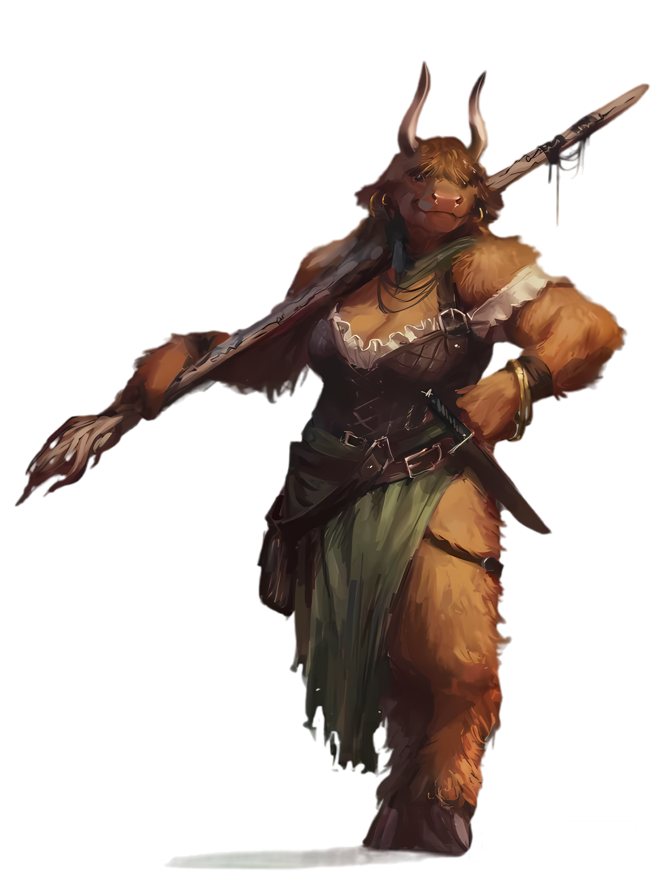
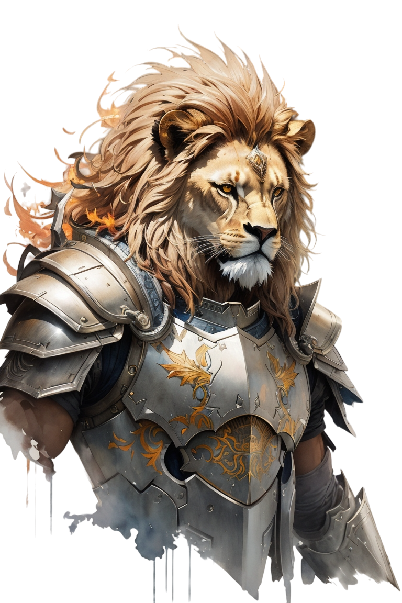
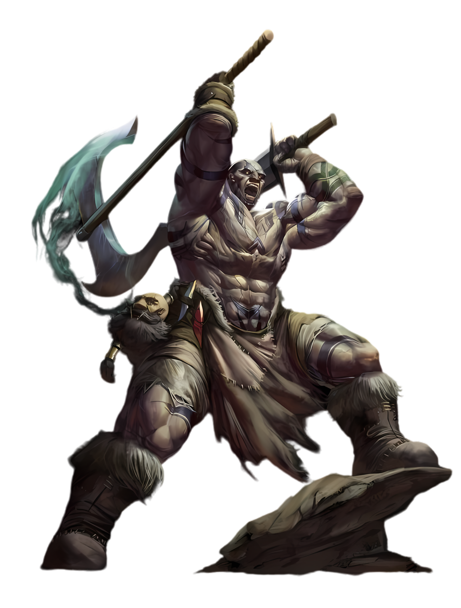
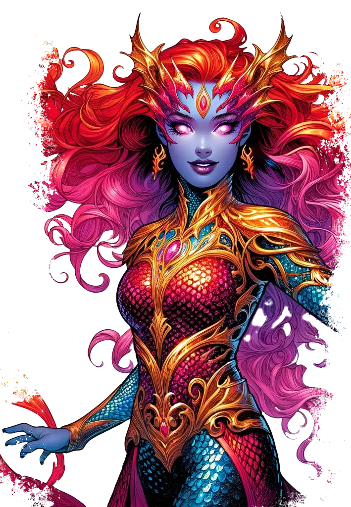
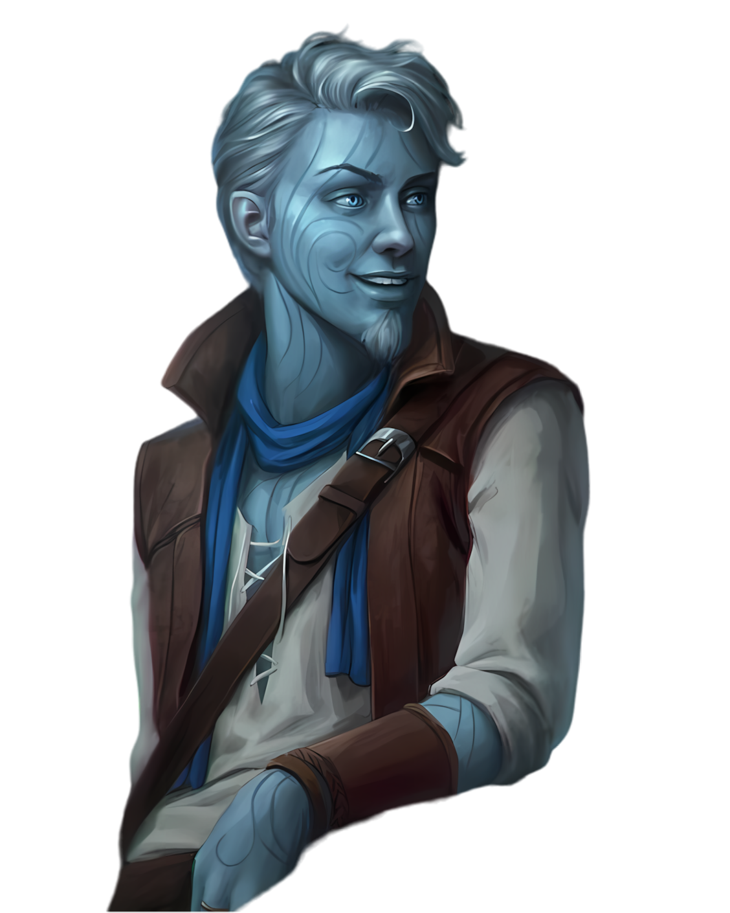
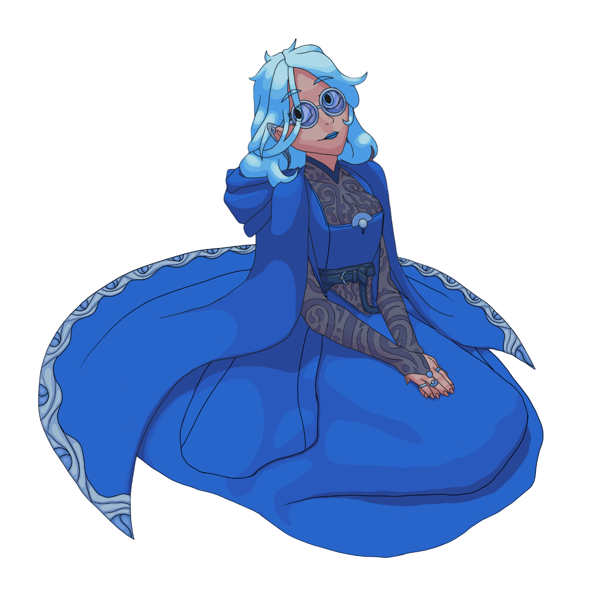

Selvagem Apios
Desbravadores das Selvagens Terras de Apios em busca da cura para a Guerra
Vendo que não seria simples vencer uma guerra contra a Igreja da Luz, foram convocados a ir para terras selvagens em além-mar tendo agora apenas um objetivo em mente: encontrar a semente para dar uma nova esperança para o povo do Grande Deserto
Bezale, a Comandante
Uma estrategista de batalha experiente e arcanista estudada nas artes mágicas
Objetivos: Redescobrir o sentido de sua vida, antes uma estrategista em uma guerra que não era necessariamente sua, agora quer conquistar vitórias para si mesma.
Calvus, O Dourado
Um fervoroso crente ao Deus Sol Rodu, pretende seguir os caminhos ensinados, iluminando e levando a palavra de seu deus a todos. Perdeu quase tudo ao iniciar essa misssão e agora apenas voltará para sua terra natal vitorioso.
Encontrar a semente e retornar com glórias ao Grande Sol, possivelmente com seus aliados como combatentes para a Guerra Rubra
Edmund, o Capitão
Antes apenas um marinheiro de um navio pirata que vivia apra libertar os escravizados no Mar Remorático, o macaco Edmund saiu do conforto de sua antiga tripulação para fazer algo maior, uma grande missão o aguardava, a ele, Igur, o furioso e Sereno, o ardiloso

Além de seguir sua jornada pela liberdade, garantir que mais ninguém sofra das injustças que sofreu, dando a chance de todos se libertarem
Igur, o Furioso
Guiado pela expertise de Edmund, agora Igur aguarda apenas pelo comando de seu 'capitão' para libertar sua ferocidade em batalha
Além de querer um caneco de cerveja, umas garrafas de vinho e uma boa noite de luxúria, algo que sempre o atraiu foi a adrenalina do campo de batalha
Olleia, a Vermelha
Um dia vivendo entre seu povo nas profundezas da água, no seguinte vivendo com o povo da superície, Olleia nunca se sentiu mal por estar distante dos seus iguais
Querendo mais poder, e ver os maus pegarem fogo, as chamas são conhecidas por purificarem, mesmo no mais profundo dos oceanos
Sereno, o Ardiloso
Também viveu boa parte de sua vida na água, mesmo sempre estando aéreo na maioria das questões ele luta por aqueles que não podem lutar por si mesmos, tomando as dores daqueles que precisam de alívio
É alguém que sabe as vantagens de um golpe preciso e usa de sua agilidade em campo para se manter seguro e mortal em cada estocada de sua lâmina
Silithil, o Sistema
A Cidade da Torre da Luz foi sua casa por muitos anos, até o dia em que fazer investigações às ruas e entrevistas aos nobres não foi mais o suficiente, Sili se viu perdida e dividida nas Terras Selvagens
Agora ela e Aukan ainda tentam se entender depois de precisarem dividir o espaço no mesmo corpo. Sua mente sempre ligada às variações psíquicas dos outros, agora parece uma armadilha para as almas divididas